系列
基督白火

30ml $1300
承載著無條件的愛之火，能深度清理身心與細脈輪裡，那些阻隔愛去流動的負向生命印記，她帶領你走出過往經驗所感受到「不被愛」與「缺乏愛」的陰影。她帶來愛的脈衝，支持體驗被無條件的愛所環繞，並向世界敞開自己。
這股基督白火具有雙重火焰的療癒力：
1,溫柔穿透的女性之火：柔軟而具穿透性，能直接內心深處隱藏的「不被愛」的抗拒與受苦的印記陰影。
2,熾熱的轉化之火：以無條件的愛的純白火焰，強大迅速消融所有「非愛」帶來的沉重感與陰影。
＊迅速移除內心深處，不被愛的經歷與匱乏感
＊釋放為愛而討好他人的慣性，停止漠視自身權益
＊釋放身心重擔，卸下「不屬於自己的責任」，轉化身心壓力
＊洗去沉重感與受苦意識
＊拿回生命主權
＊支持自我之愛，不再把自己放最後
＊轉化恐懼：不再將受苦合理化，消除內心最深的擔憂與恐懼，使人重新聚焦於愛
使用方式： 閉上雙眼，將精華噴灑於手心深呼吸吸聞，在心中連結基督白火，再噴於離身體30公分距離前方的胸口、眉心、喉嚨、小腹，及任何你覺得需要部位的氣場周圍，深呼吸，讓自己被基督愛的白火包圍、淨化。給自己一點時間靜心冥想，讓能量流動直到流動結束。
抹大拉瑪莉亞
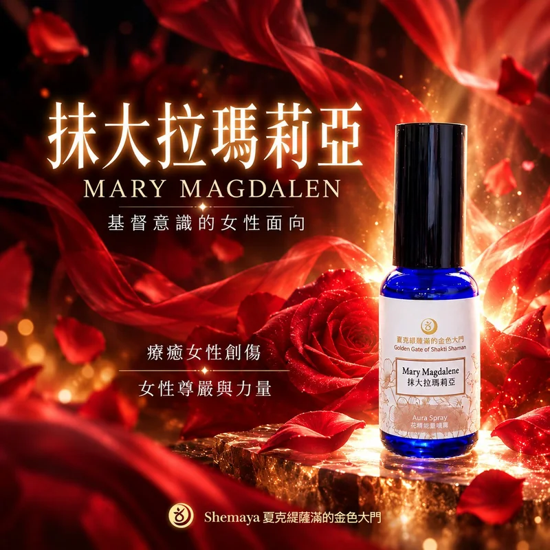
30ml $1300
抹大拉瑪莉亞代表著我們內在的神聖女性面向，對於女性長久以來所經驗到的不完整，及各種創傷，抹大拉瑪莉亞以全然的紅光撫慰，給予女性深入療癒力。
那些儲存在身體內心中，有關被壓抑的性，自我價值或是女性尊嚴等傷痛記憶，包含有關不平等對待、被過繼或是經歷生產痛苦、為家庭、家族各種自我犧牲、無價值感，她也能療癒曾經被暴力對待所留下的創傷，抹大拉瑪莉亞帶來很深的療癒與愛。
出生傳統家族的女性，想要完整自己、停止犧牲、撫平內在傷痛、修復暴力對待的經歷、強化自我療癒、自我賦權的力量，她支持所有想活出自己，想更接納自己，更愛自己的人。
使用方式： 閉上雙眼，將精華噴灑於手心深呼吸吸聞，在心中連結抹大拉瑪莉亞，再噴於離身體30公分距離前方的胸口、眉心、後心輪、小腹，及任何你覺得需要的部位的氣場周圍，深呼吸，想像自己被抹大拉瑪莉亞的愛所擁抱、淨化。給自己一點時間靜心冥想，讓能量流動直到流動結束。
厄色尼白光
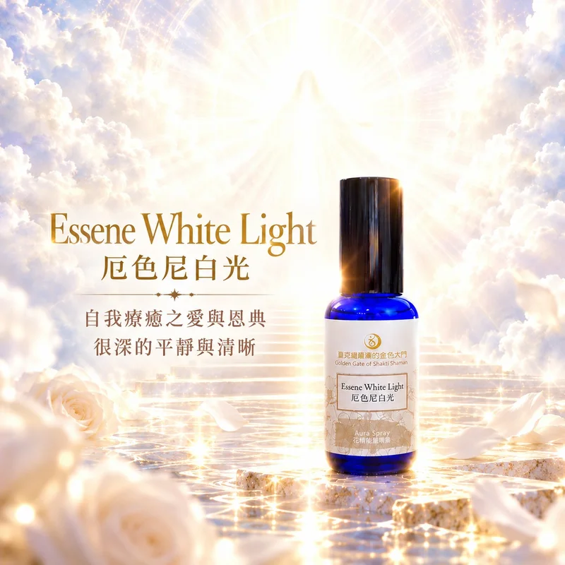
30ml $1300
帶來很深的平靜與清晰，自我療癒之愛與神性恩典。二千前多年前，依循著耶穌愛的教導而形成的厄色尼社群，這源自厄色尼人特有的純淨白光，能啟動自我療癒力。
它能為心帶來很深的平靜與清晰，能協助我們超脫心智的二元對立與其限制，而以更高角度去看待事物，透過厄色尼純淨白光淨化，也能使人沈浸於耶穌基督的恩典與耶穌愛的療癒力。也能淨化來自外界非善能量造成的各種影響。
使用方式： 閉上雙眼，將精華噴灑於手心深呼吸吸聞，在心中連結厄色尼白光，再噴於離身體30公分距離的前方，頭頂、眉心、胸口、喉嚨，及任何你覺得需要的部位的氣場周圍，深呼吸，想像自己被愛的厄色尼白光所包圍、淨化。給自己一點時間靜心冥想，讓能量流動直到流動結束。
聖母
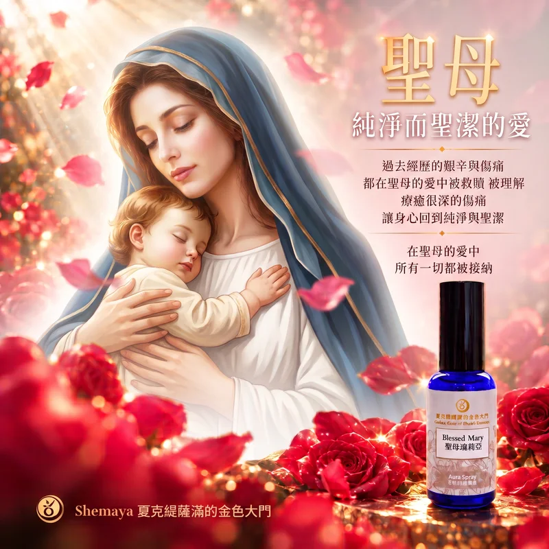
30ml $1300
純淨無瑕的愛 療癒所有受傷的心帶著神聖之愛，聖母精華使人完全被純淨而聖潔的愛所包覆。
過去所有經歷的艱辛與傷痛，都在聖母的愛中被救贖，被理解。化解失落與痛苦，療癒藏得很深的傷痛，也讓靈魂身心回到純淨無瑕與聖潔。在聖母的愛中，所有一切無論好壞，全都被接納。
對所有人都有益，特別是與母親分離或有親子議題，童年未得足夠母愛的人們
療癒受傷的身心
感受被神聖之愛撫慰
移除罪惡感
得到被理解與接納
天堂母親愛的懷抱
消除自我否定或批判
感受被愛與自我接納
使用方式： 閉上雙眼，將精華噴灑於手心深呼吸吸聞，在心中連結聖母，再噴於離身體30公分距離的前方，頭頂、胸口、喉嚨、小腹、海底輪，及任何你覺得需要的部位的氣場周圍，深呼吸，想像自己被聖母的愛所包圍、滋養。給自己一點時間靜心冥想，讓能量流動直到流動結束。
莎拉
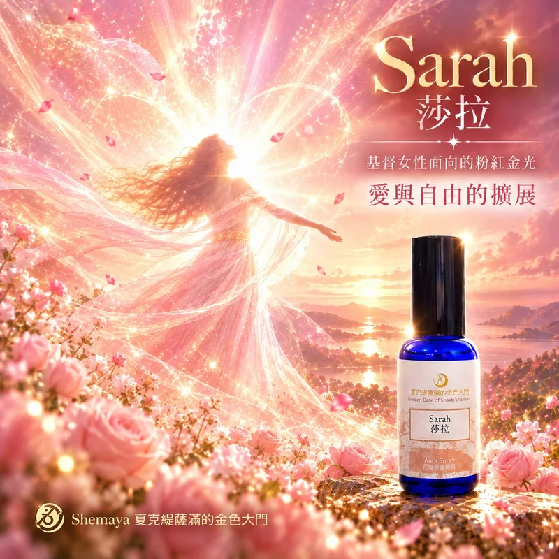
30ml $1300
粉紅金光，強力支持你對自己在地球的存在說是
帶著基督陰性面向的粉紅金光，這股溫柔的粉紅金光，富有基督女性面向的力量，能釋放身心沈重的負擔，讓舊有的挫敗經驗透過雙足流向大地！這粉紅金光的愛支持你勇敢與自信，勇於擴展自身之光並對自己在地球的存在說是！支持人們轉化過去能舊經驗帶來的影響，並能在黃金世紀更輕盈前進。
此能量精華噴霧內含有：特殊高頻能量、有機純露、白酒、純水。每次使用只需少量即能達到效果。
使用方式： 閉上雙眼，將精華噴灑於手心深呼吸吸聞，在心中連結莎拉，再噴於離身體30公分距離的前方，頭頂、眉心、胸口、喉嚨、海底輪，及任何你覺得需要的部位的氣場周圍，深呼吸，想像自己被莎拉的粉紅金光所包圍、滋養。給自己一點時間靜心冥想，讓能量流動直到流動結束。
綠度母除障噴霧
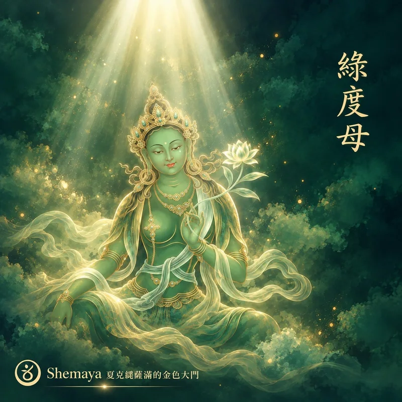
30ml $1300
度母是觀音一滴慈悲的眼淚所化現。當有疾厄之災，凡舉瘟疫丶戰爭動亂，人們有病苦丶恐懼及顛倒妄想等，都會持誦綠度母心咒以化解災難。
綠度母除障噴霧有如一股甘露水，帶著清涼，沁心甦醒感能讓感腦部如釋重負。度母的白綠光芒宛如一股龍卷風，特別拂去積累在頂輪，以及與影響感知力的雜穢濁氣，所有的紛擾想法消失，整個身心變得輕盈與寧靜。
使用時機：
＊撥開思緒迷霧：掃除資訊過載、長期高壓而積聚在頭部的混濁感，重拾思維敏銳與清醒＊轉化能量滯礙：梳理頭部氣場周圍停滯阻力與雜質＊庇護與安全感：撫平外界環境變動引發的浮躁與隱微不安＊喚醒內在智慧：度母慈悲願力的陪伴下，增長智慧與祥和善念福德。
使用方式：閉上雙眼，將精華噴灑於手心深呼吸吸聞，在心中連結綠度母，再噴灑於距離身體30公分距離的前方：頭頂頂輪、額頭前後、胸前心輪及周圍空間氣場。亦可雙手合十握持瓶身，配合深長呼吸，在心底輕聲持誦度母心咒：「嗡 達咧 嘟達咧 嘟咧 梭哈」
觀音甘露

30ml $1300
50ml $2000
承載觀音慈悲的柔和頻率，如同清涼甘露遍灑身心，專為長期暴露於複雜人造訊號、感知容易受到外界擾動的朋友，帶來極致細膩的能量守護。
現代環境充斥著繁複的科技訊號、人造微細頻率，以及紛擾的集體意識波動。這些隱微的干擾常在不知不覺中滲入氣場，造成感知疲乏、心緒飄忽與失焦
＊清理長時間接觸電子設備與人造訊號所積累的氣場混亂感，找回寧靜。
＊阻絕外來混亂意識與強加頻率的無形牽制，支持你穩固自我主體性，不被外界波動影響
＊移除低頻能量的干擾，讓心靈重回保護與寧靜。
＊純淨之光，化解一切不調和的能量共振。
使用方式： 閉上雙眼，將精華噴灑於手心深呼吸吸聞，在心中連結觀音甘露，再噴灑於距離身體30公分距離的前方：頭頂上方、後腦勺、眉心、胸口心輪、後心輪、喉輪、海底輪，也可自行選擇某些在身體周圍氣場的點，配合深長呼吸，去接收並感受觀音甘露的深層淨力，給自己一點時間靜心冥想觀音甘露，讓能量流動直到流動結束。
瀧見觀音
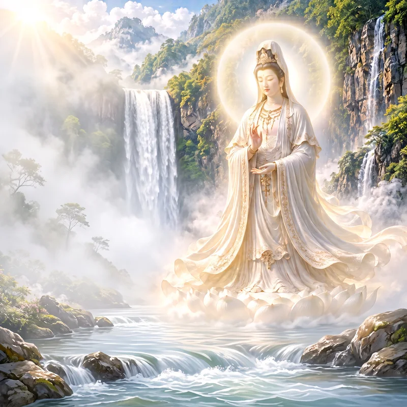
30ml $1300
以清涼的飛瀑形式，瀧見觀音將慈悲及智慧帶入身心，將那些讓你感到人生好難的疲憊或無力感等沈重能量清除，回到輕盈，帶回清晰、穩定。
瀧見觀音又名飛瀑觀音，坐岩上觀望瀑布故得此名。寓意芸芸眾生，猶如墮火坑中，觀音護佑眾生，使事事順利，富壽安寧。
瀧見觀音具深度洗滌淨化力，也能為心輪快速充電，提升身心的頻率，讓人更容易與神聖連結，進而啟動、強化在你之內的自我療癒能力。
使用時機：
需要清晰時、想跟觀音連結時、靜坐冥想、憂鬱、心情低潮、想放棄時、心輪卡住的、難以擴展愛時、缺乏動力、頭上像是被什麼罩住時⋯。
使用方式： 閉上雙眼，將精華噴灑於手心深呼吸吸聞，在心中連結瀧見觀音，再噴灑於距離身體30公分距離的前方：頭頂、胸前、心輪及後心輪周圍氣場，或全身任何覺得需要的地方。亦可雙手合十握持著瓶身，配合深長呼吸冥想瀧見觀音，給自己一點時間，讓能量徹底流動直至結束。
騎龍觀音
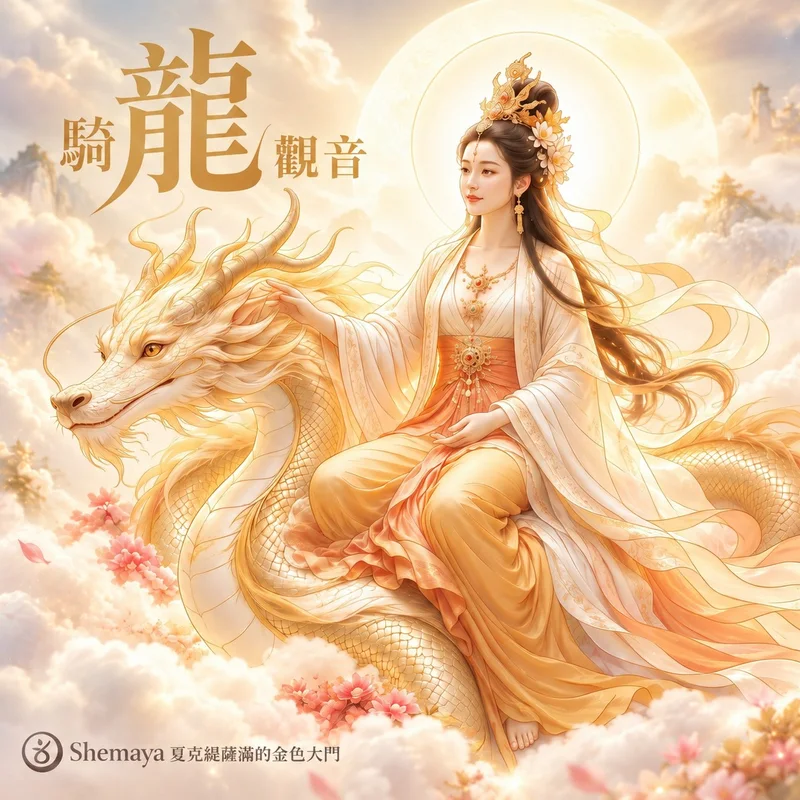
30ml $1300
當思緒紛飛、或擔憂焦慮、或對某些事緊抓不放時，內心執念會編織出一張大網，以無休止的顛倒幻想來耗你。觀音以乘龍凌空的浩瀚之力，帶來直擊幻相的綠光，能瓦解遮蔽你的黑暗迷霧，其穿透力能帶你快速跳出自我設限的泥沼，看清事情的真實樣貌
使用時機：
身心感到沈重、 心有擔心害怕。對未知擔憂、或是想跟觀音連結時、當思緒紛飛時、 想要靜坐冥想時、想停止心浮氣躁時、煩亂不安，內心欲振卻乏力、身心像被什麼罩住時。
書云：觀音乘龍顯聖於祥雲中，是化身天龍之身，故稱騎龍觀音、乘龍觀音，象徵觀音菩薩的法力無邊，為民除害。
使用方式： 閉上雙眼，將精華噴灑於手心深呼吸吸聞，在心中連結騎龍觀音，噴灑於距離身體30公分距離的前方：頭頂頂輪、胸前心輪及周太陽穴周圍氣場。亦可雙手合十握持瓶身，配合深長呼吸冥想騎龍觀音，給自己一點時間，讓能量徹底流動直至結束。
紫金光蓮花
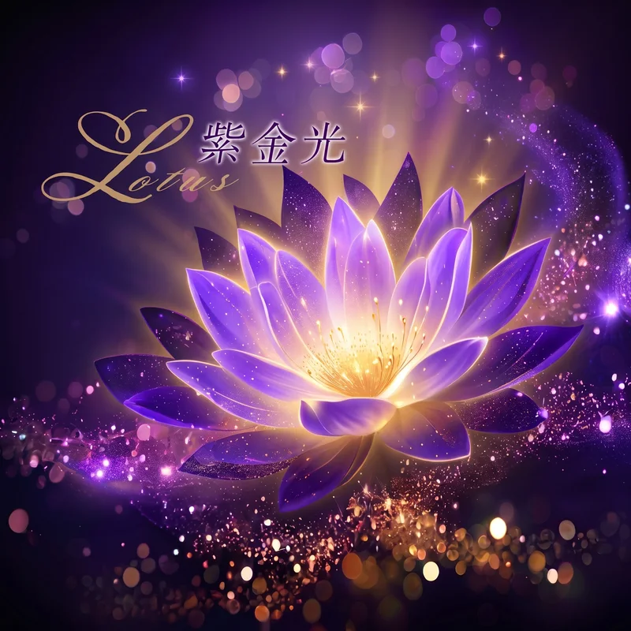
30ml $1300
紫金光蓮花為狼族聖殿神聖植物，經授權開放後，讓更多人能得到這份神聖祝福。這朵蓮花盛開時，蓮花花瓣會綻放出璀璨的紫金色光芒，花瓣中釋放出不同的神聖符號，透過自行運作使人被小我意識控制的意識流，能提升轉化到更高的洞見與智慧。
最重要的作用是快速校準頂輪與天堂源頭之間的連結，強化內在與高層意識的溝通。特別守護夏克緹女性力量，提升個人振動頻率，淨化光的通道。紫金光蓮花是具有高度智慧的神聖能量。它會依據使用者當下所需要的支援，呈現不同效應，因此很適合陪伴使用者進入適合自身的轉化歷程。
使用方式：閉上雙眼，將精華噴灑於手心深呼吸吸聞，在心中連結紫金光蓮花，再噴灑於距離身體30公分距離的前方：頭頂頂輪、額頭前後、胸前心輪，以及你覺得有需要的身體部位的周圍氣場。配合深長呼吸，感受被紫金光蓮花包圍，給自己一點時間靜心冥想，讓能量流動直到流動結束。
神聖紫光
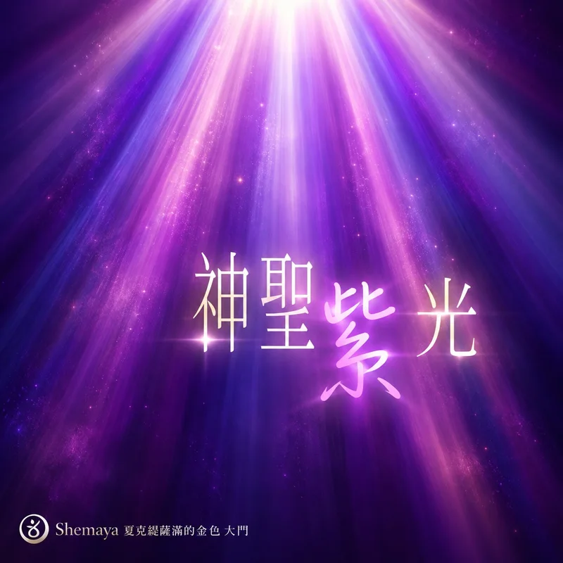
30ml $1300
神聖紫光為身心注入轉化能量，協助提升脈輪的振動頻率，使人更敞開心扉去迎接生命中尚未展開的更多可能性。神聖紫光能映照出靈魂深處的神聖本質，幫助我們超越理性思維與小我的限制，不再被過去的經驗、固有信念及自我設限束縛。
神聖紫光特別能淨化潛意識深處的自我否定，包括認為自己不夠好，或有罪惡感、不值得接受神性恩典的信念。對那些內心渴望聖愛與祝福，卻由於潛意識深處的不值得，而不自覺迴避、抗拒，甚至關閉接受恩典通道的人，神聖紫光能鬆動這些深層限制，重新看見自身原本具有的神聖性與純淨，也不再因為不完美而否定自我價值，重新認出自身的神聖性，放下內在抗拒，敞開心扉，允許來自神聖恩典與祝福流入生命。
使用方式：閉上雙眼，將精華噴灑於手心深呼吸吸聞，在心中連結神聖紫光，再噴灑於距離身體30公分距離的前方：頭頂頂輪、額頭前後、胸前心輪，以及你覺得有需要的身體部位的周圍氣場。配合深長呼吸，感受被神聖紫光包圍，給自己一點時間靜心冥想，讓能量流動直到流動結束。
羽穗
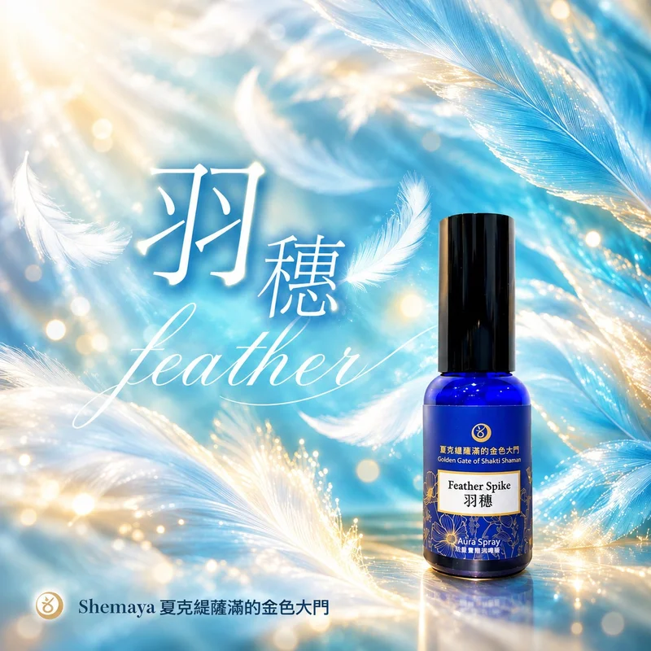
30ml $1300
當我們累積了太多想法或情緒，就像一團糾結混亂的毛線，理不清頭緒，更難以讓心智真正安靜下來。尤其長時間接收過多外在的聲光刺激、大量雜訊、媒體的圖卡資訊、文字訊息，造成頭部能量過度負荷，會令人感到疲倦、精神耗弱、思緒遲滯，甚至出現思緒卡頓、難以集中注意力的狀態。有些人更形容，頭部彷彿灌滿水泥那種濃稠、沉重，失去了原有的清明與流動性。
羽穗純淨的光能，帶著有如羽毛穗形狀，能深入精微能量系統之凹槽深處，能清理層層堆積的雜訊與紛亂垃圾，讓過度擁擠的心智達到沉澱、淨化，重新找回清晰、輕盈與明亮與內在寧靜。
使用方式：閉上雙眼，將羽穗精華噴灑於手心深呼吸吸聞，在心中連結羽穗，再噴灑於距離身體30公分距離的前方：頭頂頂輪、額頭前後、兩側太陽穴、耳朵外側、眼睛正前方，以及任何你覺得需要的身體部位的周圍氣場。配合深長呼吸，感受被羽穗的淨化光包圍，給自己一點時間靜心冥想，讓能量流動直到流動結束。
天使之歌
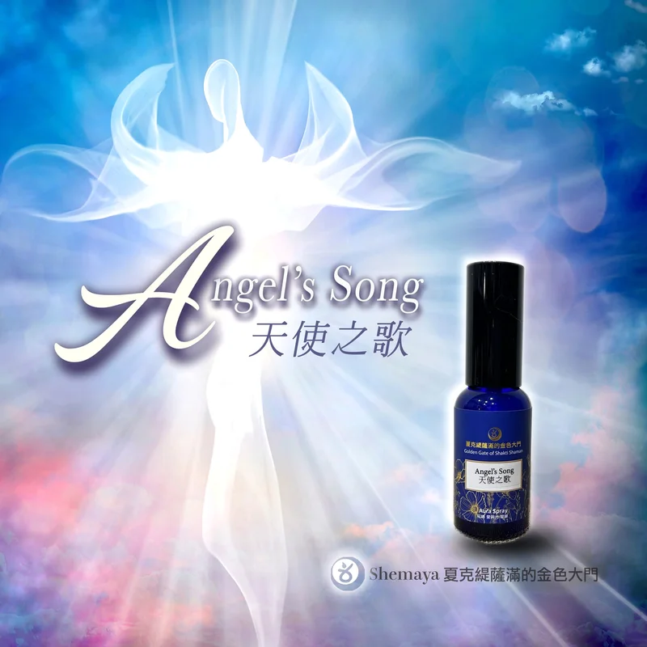
30ml $1300
淨化能量覆蓋，聆聽高頻的天使訊息。天使之歌是源自賽巴巴的神聖光植物，是一款蘊含元素特質的光植物複方精華，具獨特的能量頻率，能迅速拆解脈輪與氣場上的能量屏蔽或覆蓋，清理層層堆積的阻塞，將光帶入身心中那些尚未被照亮的角落，讓停滯的能量重新流動。
天使之歌蘊含特殊的振動頻率，能支持身心能量流動，並使人回到內在之心。當外在紛擾消失後，便能聽見內在深處真實的聲音，天使之歌也協助你敞開內在，準備好與天使訊息相遇，接收此刻對你而言最重要的內在指引。
使用方式：閉上雙眼，將天使之歌精華噴灑於手心深呼吸吸聞，在心中連結天使之歌，再噴灑於距離身體30公分距離的前方：頭頂頂輪、額頭前後、後腦勺、兩側太陽穴、耳朵外側、眼睛正前方，以及任何你覺得需要的身體部位的周圍氣場。配合深長呼吸，感受被天使之歌的淨化光包圍，給自己一點時間靜心冥想，讓能量流動直到流動結束。
金光狼
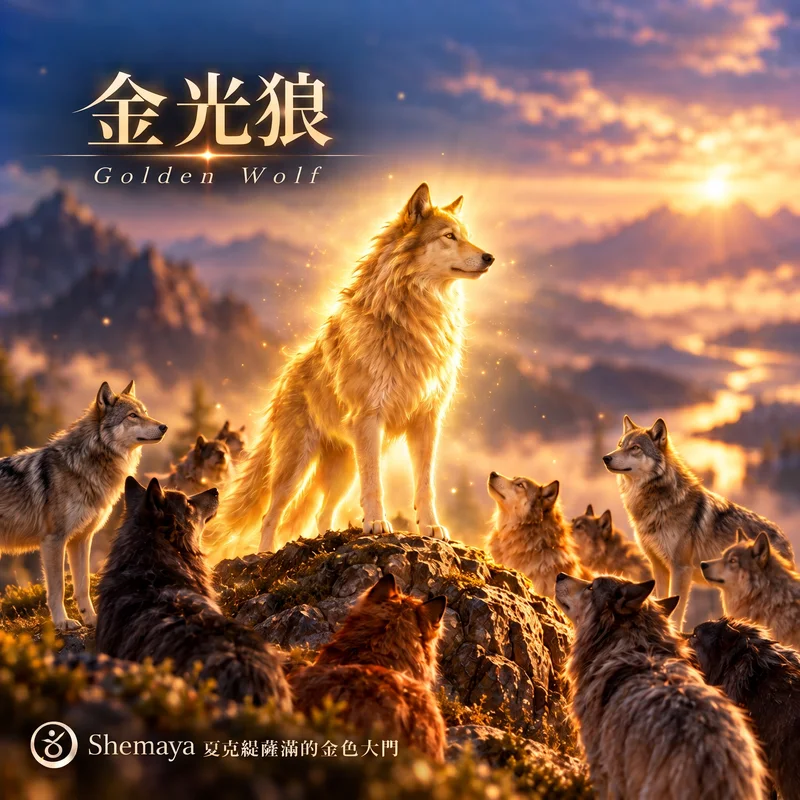
30ml $1300
金光狼是所有狼族部落中最高階的領導者，象徵著至高的領導力與神聖智慧。祂承載著神性之母化身的愛，蘊含深厚的神聖藥草療癒智慧，以慈愛、智慧、強大的力量引領狼族。金光狼能直接深入，並轉化源自舊時代的陰影結構，瓦解長久以來深植於個人內在的幻象、限制與抗拒。金光狼協助修復那些因遺忘自身力量而留下的創傷印記，讓被壓抑、被封存的內在力量重新甦醒。
這股力量能喚醒沉睡中的意識，穿透長久以來的自我限制，幫助人重新認出自己的力量、勇氣與神聖本質。不再遺忘自己是誰，也不再將自己的力量交付給恐懼與外在世界。金光狼同時也具有強大的領導與召喚力量，能夠喚起那些內在具有狼族薩滿本質的人，重新連結到靈魂深處的狼的薩滿品質與力量，打開與生俱來的直覺、勇氣、守護與領導的天賦，讓你重新成為自己生命的領導者。
使用方式：閉上雙眼，將金光狼精華噴灑於手心深呼吸吸聞，在心中連結金光狼，再噴灑於距離身體30公分距離的前方：頭頂頂輪、額頭前後、後腦勺、太陽輪（上腹部）、海底輪（會陰）外圍距離身體30公分，以及任何你覺得需要的身體部位的周圍氣場。配合深長呼吸，感受被金光狼的金光所包圍，給自己一點時間靜心冥想，讓能量流動直到流動結束。
天狼星恩典之花
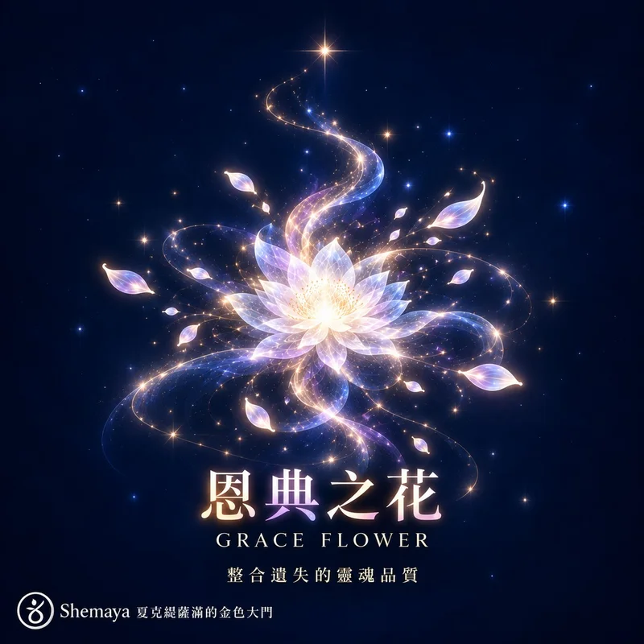
30ml $1300
在過去無數的轉世經驗中，你的靈魂已發展出不同的品質、天賦與能力。然而，在漫長累世記憶中，可能曾經驗某些不好的經驗、傷痛或創傷，導致相關的某些能力被自己遺忘、封存、否定。恩典之花散發出的純白花朵般的溫柔之光，能協助你尋回那些你靈魂已經發展出來的美好品質，將你過去抗拒或不願接納的部分重新迎回，與此世的自己重新連結、整合。
恩典之花支持你接納自己不同的面向，不再否定，也不再刻意排斥或隱藏某些品質面向。當那些被遺忘、被拒絕的靈魂品質重回生命中，你能擁有更多內在力量，更加完整與真實。
特別推薦給那些想要自我接納的人，想整合自身不同品質，歡迎力量回來的人。或是對自己「某些樣子」不滿意的人，對自我標準很高，或是難以看見自己成就的人。
使用方式：閉上雙眼，將恩典之花精華噴灑於手心深呼吸吸聞，在心中連結恩典之花，再噴灑於距離身體30公分距離的前方：頭上的頂輪、心輪（胸口）、喉輪（喉嚨高度），然後去加強其中最需要的脈輪，或任何你覺得需要的身體部位氣場，配合深長呼吸，感受如被恩典之花星星包圍著，淨化並修復著。給自己一點時間靜心冥想，讓能量流動直到流動結束。
天狼星源頭星星
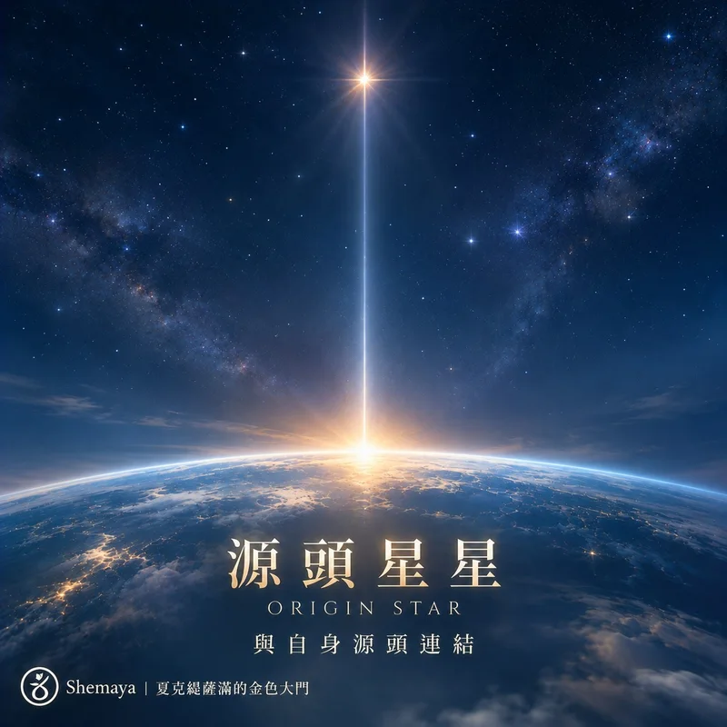
30ml $1300
協助連結自身的天堂源頭，讓來自源頭的純淨之光，持續為身心靈帶來滋養、支持與守護。承載著源頭之光的祝福，源頭星星能支持你的身心修復與能量充電，陪伴你在日常生活中獲得足夠力量，找回內在安定、安全與充實感。
當感到孤單、疲憊或與內在失去連結時，源頭星星這道來自源頭天堂的光，能讓你感受被支持、被滋養與被守護。它讓天堂的光不再遙遠，並持續提供扎根於地球的保護。
特別推薦給：
經常感到內心孤單，渴望感受愛與支持，或身心易疲憊，常需要更新與充電，或想獲得源頭滋養、支持與守護的人，以及想與天堂源頭有連結，找回內在歸屬感，渴望將天堂的光帶入生活，讓神聖能量在地球扎根的人們
使用方式： 閉上雙眼，將源頭星星精華噴灑於手心深呼吸吸聞，在心中連結源頭星星，再噴灑於距離身體30公分距離的前方：輕噴頂輪、心輪（胸口）、海底輪，然後去加強其中最需要的脈輪，或任何你覺得需要的身體部位的氣場，配合深長呼吸，感受被源頭星星環繞著，滋養與充電。給自己一點時間靜心冥想，讓能量流動直到流動結束。
天狼星三位一體
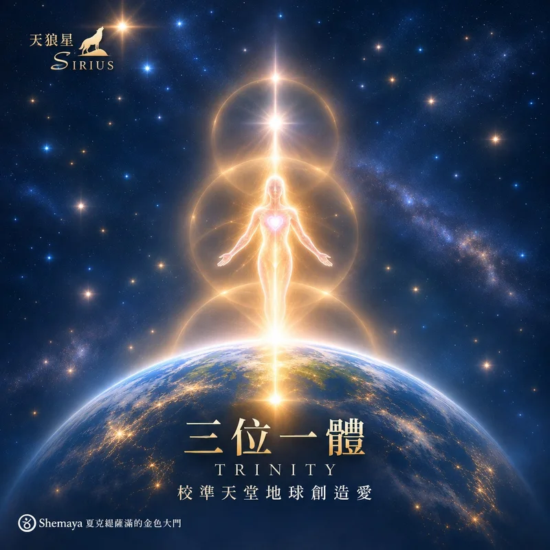
30ml $1300
當我們生命中發生越是在意、越難以承受的事件時，容易引發起相對的情緒反應，甚至留下某些創傷印記。在能量層面，這些不被喜歡的經驗可能形成脈輪裡的某些陰影、或造成氣場細小裂縫甚至形成阻塞點，使個人的核心力量偏離中軸，而產生能量系統失衡，或感覺某些內在部位出現空洞與失落。當我們不再穩穩地站在自己的能量中軸上，生活的各個層面也可能逐漸失去平衡。
失衡狀態可能表現在身體層面上，也可能是情緒、或是思維與行動層面上：容易疲憊、經常感覺能量不足，做什麼都很吃力; 身體易感到哪裡酸痛、沉重，常缺乏活動意願 ; 經常多夢、亂夢、睡眠品質不穩定; 容易手腳冰冷、習慣彎腰駝背、能躺就躺、能坐就不站，或是缺乏安全感，難以相信自己，或是常自我否定、覺得這個不行、那個也做不到，或是難以愛自己，或常習慣性將問題歸咎於他人，或是過度依戀物質、感情或是外在的關係，渴望從外界尋求安全感，或是對工作缺乏熱情，經常想換工作、甚至抗拒上班，或是害怕走出舒適圈、遇到問題常退縮或逃避，或是對家人或親密關係有強烈控制欲，或害怕人際互動、傾向社交退縮、或是想法很多，卻缺乏實際行動力，或是常常很忙，做了很多事，卻總是抓不到重點，或是習慣用力硬撐，無彈性不懂變通，或總忙著滿足別人的需求，卻忽略自己。
天狼星三位一體是校準身心能量系統的星光光束，能移除那些使你偏離自身能量中軸的陰影與阻塞，重新校準你的能量系統，讓你重新回到能量中軸，重新找回平衡、穩定與力量，也能為脈輪注入力量，支持核心能量讓你心重新穩定地連結天地，不輕易被外在事件或情緒牽動，能更有力量面對生命中的挑戰，不再是被問題推著走，而能穩定、看清方向，並穩穩走自己的路。
特別推薦給：
希望找回內在核心力量，擁有突破困境勇氣
渴望穩定身心能量，不再容易被外在環境牽動
想要腳踏實地，將夢想真正付諸行動
容易退縮、逃避，或缺乏行動力的人
經常忙碌卻失去方向，想重新找回生命重心
想培養面對人生挑戰、過關打怪的大力量
使用方式： 閉上雙眼，將精華噴灑於手心深呼吸吸聞，在心中連結三位一體，再輕噴於距離你的頭頂、心輪（胸口）、海底輪（會陰）30公分的距離，或任何你覺得需要的身體部位的氣場，配合深長呼吸，感受如被三位一體的能量調整。給自己一點時間靜心冥想，讓能量流動直到流動結束。
粉紅沙賓花
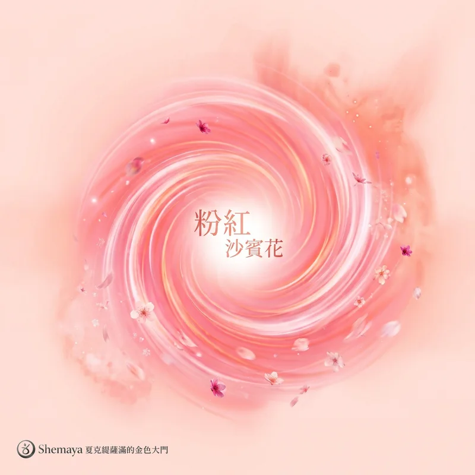
30ml $1300
專為陪伴深層情緒梳理而設生，當心中累積了難以言說的委屈、關係的付出未獲回應的失落，或是因背叛、遺棄與失望而層層包裹起的保護殼時，她撫慰並溶解身心中藏得很深的淚水，包含那些付出卻得不到相對回報的陰影，她剝除由於失望而導致的繭，協助放手悲傷與痛苦。
粉紅沙賓花是心的解藥，特別能對治藏很深的妒忌，以及那些偷偷藏在黑暗角落的情緒糾結。
＊軟化防備與僵硬的心：陪伴因失望而形成的內在隔閡，讓緊繃的心逐漸鬆開、恢復柔軟
＊轉化自我批判苛責：透過自我療癒放下苛責及自我貶抑，接納去愛自己最困難去愛的部分
＊溶解深層陰影：透過自我之愛的滋養，深入無法察覺的內在妒忌、轉化藏在深處的黑暗與各種情緒糾結。
特別推薦
經歷人際關係變動、情感失落或感到付出失衡時
長期處於壓抑、自我防衛或對自我要嚴苛批判的狀態
想要更多愛自己、接納自己
需要與外在世界和解，或與自己作內在和解
使用方式： 閉上雙眼，將精華噴灑於手心深呼吸吸聞，在心中連結金粉紅沙賓花，再輕噴於距離你的眉心輪（額頭）、心輪、後心輪、臍輪（小腹）、後腰處的外圍的30公分距離，或任何你覺得需要的身體部位的氣場，配合深長呼吸，感受如被粉紅沙賓淨化與撫慰。給自己一點時間靜心冥想，讓能量流動直到流動結束。
金白沙賓花
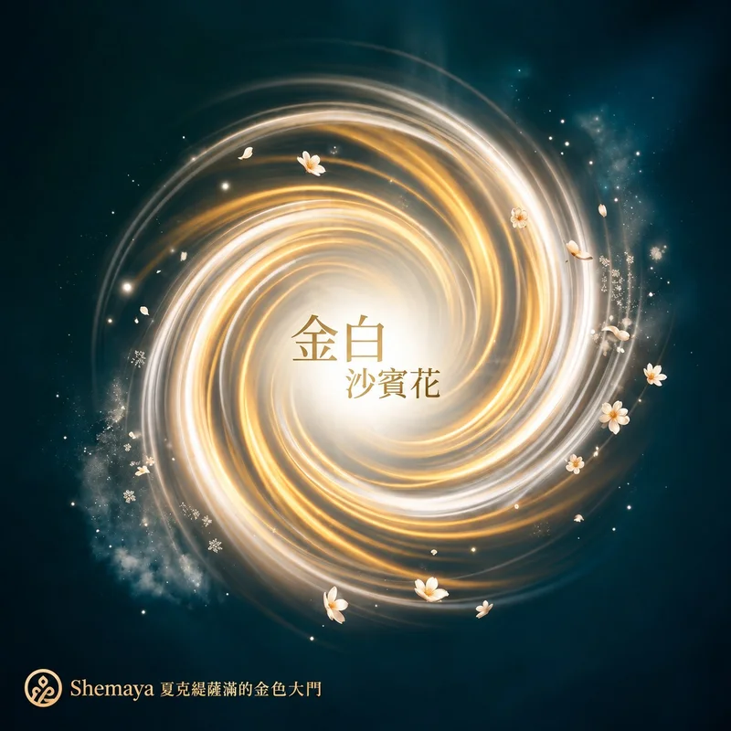
30ml $1300
你是否滿懷熱忱想探索靈性，卻經常被世俗的繁瑣事物絆住，不知不覺偏離了內心的渴望？
你是否渴望有更美好的未來，卻總感覺自己受到某些無形力量牽制，難以向前？
又或者，你總是忙於回應家人、朋友的需求，不斷付出時間、情緒與精神，卻很難保留足夠空間、時間給自己？
金白沙賓花，為關係帶來平衡與內在的力量。對於過度保護自己、習慣性築起防衛，或在人際關係中界線薄弱，常被當作工具人...，她協助人重新找回與外界的適當界限，在付出與自我照顧之間取得平衡。金白沙賓花散發純淨而堅定的金白之光，能穿透舊有思維與信念所造成的幻象迷霧，釋放來自壓力、情緒與人情牽絆的無形枷鎖，溶解過度承擔帶來的煩惱與責任束縛。
她迅速提升頂輪的振動頻率，讓你重新照見內在真實。能夠清晰辨識需求，堅定地建立健康的界線——無論是時間、情緒、精神，或物質層面的付出，都能適當掌握選擇權。金白沙賓花喚醒你內在的神性尊嚴，讓你不再因為迎合他人，去承擔過多責任，而遺忘自我價值、模糊了生命方向。她強化在你之內的神性尊嚴，神性尊嚴讓你更堅定、清晰的站在自己的核心，將你的時間與精力，更多投注在你所渴望創造的美好未來。
使用方式： 閉上雙眼，將精華噴灑於手心深呼吸吸聞，在心中連結金白沙賓花，再輕噴於距離你的眉心輪（額頭）、後腦勺、太陽穴兩側、心輪、後心輪、太陽輪（上腹）、後腰處等外圍的30公分距離，或任何你覺得需要的身體部位的氣場，配合深長呼吸，感受如被金白沙賓花淨化與充電。給自己一點時間靜心冥想，讓能量流動直到流動結束。
內在小孩

30ml $1300
和母親的關係會影響成年後的親密關係，倘使幼年期雙親太忙，或母親不在身邊或被送養，或隔代教養等原因，導致孩子童年未得到足夠的愛，這些來自童年時光的記憶感受，會在潛意識中持續影響成人後的情緒與行為。由於內在某部分並沒隨著年齡成長而停留在幼年期的，就叫內在小孩。內在小孩常能讓人回憶起美好的童年經歷，也會喚起幼時的恐懼和創傷等不被愛的記憶。
內在小孩水晶光噴霧，含月光石等四種水晶光頻與神聖祝福能量，具多種特色：給予鼓勵與肯定、提供安全感、安定、滿足被愛的渴望、提供母性愛修補內心缺憾或創傷。內在小孩水晶的愛也能協助當事人更多回到愛中，對過往能有所理解，放手不快樂的記憶。透過給予母性的愛，深深的療癒臍帶關係。
使用時機：受某些話語或行為影響心情時、與人互動引發舊時的某種情緒記憶時，或是感到退縮、受傷、痛苦或憂鬱時，內心感到匱乏，或孤單時、渴望被理解被接納時，想靠近和母親的距離，或想緩解親子關係，想要被愛時，或想解除心中不安全感，想重新信任、想被珍視時，想解決感衝突。
使用方式： 閉上雙眼，噴灑於距離身體30公分外的距離：胸口心輪、後心輪、小腹、後腰部、眉心、海底輪等外圍的距離，也可自行選擇某些在身體周圍氣場的點，配合深長呼吸，去接收並感受溫暖包容的愛之流，給自己一點時間靜心冥想，讓能量流動直到流動結束。
豐盛
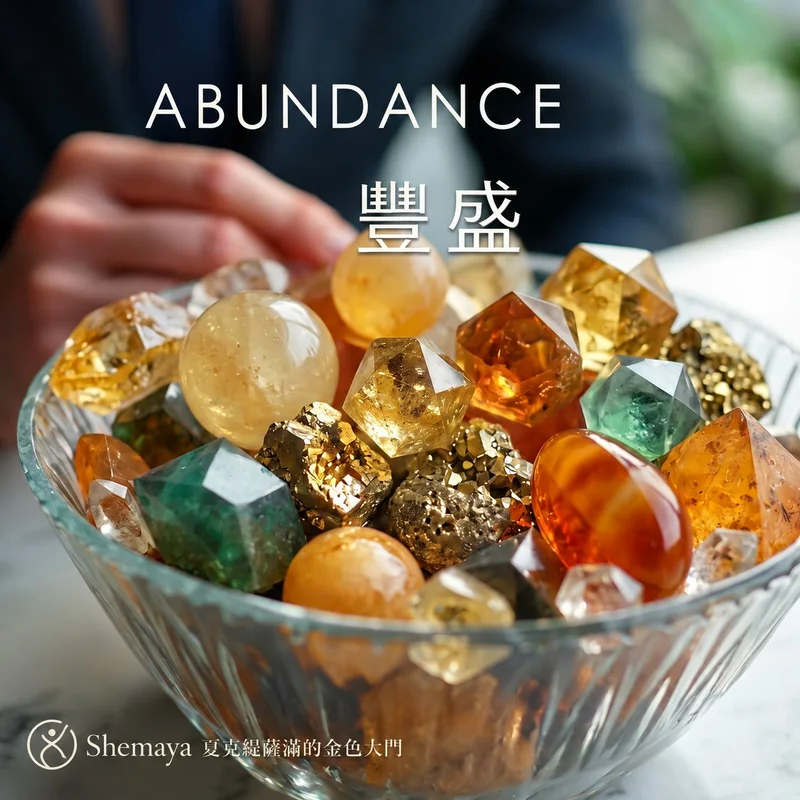
30ml $1300
豐盛是始於內在意識的改變昇華，非坐等意外之財。
豐盛水晶光噴霧含有黃水晶、黃鐵礦等6種水晶綜合光頻，與神聖祝福能量。豐盛水晶光給予全面性的支持！首先他會移除在你心中那些阻礙你豐盛的限制性意識，將它提升並轉化成「專注在成為豐盛」的目標，讓你聚集心力在對生命有意義的事物，他提供穩健的實踐力，並促使你的心能敞開去吸引豐盛。
它也策發你的積極與行動力，將豐盛金光注入你的各層面，去放大有關富足的能量，啟動自信與堅定豐盛的迴路，創造所想要的成功豐盛。
使用時機：
想改變自己入、想提升業績入、想增加收入、想要突破想成功、想自信，想豐盛的人、想行動創造、想要更好人生、想要創業的人
使用方式： 閉上雙眼，噴豐盛在距離身體30公分外的距離：眉心、胸口心輪、上腹腹、海底輪，也可以自行選擇某些在身體周圍氣場的點，配合深長呼吸，去接收並感受豐盛的水晶光流，給自己一點時間靜心冥想，讓能量流動直到流動結束。
活力復甦
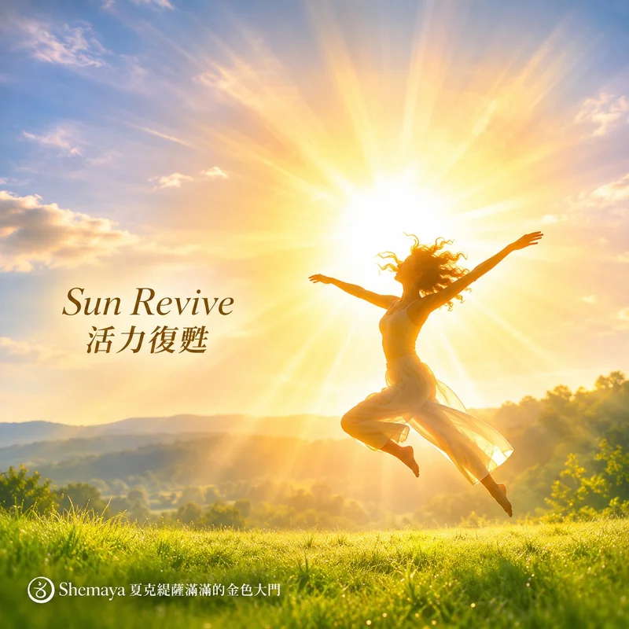
30ml $1300
含有橄欖石、琥珀、祖母綠等五種水晶綜合光頻，與神聖祝福能量，為身心注入充沛的生命動能，給予修復與再生力量。有時我們忽略身體的休息，習慣依靠意志力不斷完成生活裡的任務，身心便逐漸累積疲憊，形成僵硬、緊繃與能量幾近耗竭的狀態。活力復甦的水晶複方光頻，會先軟化身心僵硬、釋放沉重感，再透過以強而有力，如火山爆發奔放的岩漿流強度，去推動停滯，帶走長期累積的疲憊感，最後再激勵身心的修復力與再生。
它含有穿透性的太陽黃光，喚醒內在的朝氣、動能與活力；同時支持擴展心輪的愛共同去推動生命力，支持身心重新啟動，迎向活力的狀態。
＊軟化僵硬：使緊繃而失去彈性的身心放鬆，恢復柔軟流動
＊深層充電：為疲憊與耗竭的狀態注入動能，喚醒身心活力
＊推動再生：如火山岩漿般強勁的生命之流，瓦解停滯，激勵內在更新
＊太陽光的啟動：穿透性的太陽黃光，支持熱情、活力與
＊擴展心輪之愛：以愛的能量滋養內在，讓活力不只向外衝刺，上下脈輪也能自由流動
使用方式：閉上雙眼，將精華噴灑於手心深呼吸吸聞，在心中連結活力復甦，再將活力復甦噴霧噴於距離身體30公分外的距離：胸口、上腹部、右側肝臟、左側脾臟、中央胃區、後腰部、海底輪（會陰），也可以自行選擇某些在身體周圍氣場的點，配合深長呼吸，去接收活力復甦，給自己一點時間靜心冥想，讓能量流動直到流動結束。
幸福
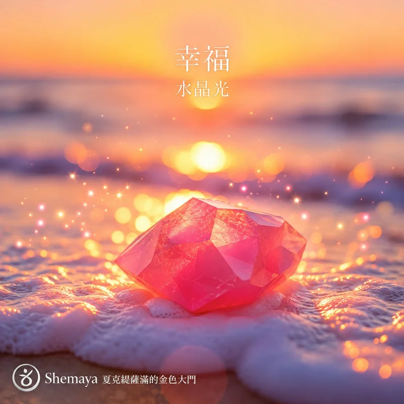
30ml $1300
有粉紅碧璽及其他水晶光頻與神聖祝福能量。帶著輕透、粉紅光的幸福之愛流入全身脈輪激發愛的潛能，讓人感受被幸福美好所環抱。
幸福水晶光會先為你移除不幸福之感受，再以帶著滿足與被愛來為脈輪充電，粉紅光頻的電流化解釋放身體堵塞的能量點，能活化身體動能，有益全身上下全脈輪，支持結連高我、 連結動物、與連結大自然王國、支持陪伴兒童
感受被愛的幸福感，使用者回饋說感覺自己身心有回春與輕盈感，也有人覺得自己變美、變年輕之感。當你感到孤獨時、想要被愛時、想要有安全感時、想變年輕、想要變美時、想有充滿活力的一天時、失戀時、想重新振作、想要連結更高層級的世界、為動物溝通作準備、想和大自然連結、想更耐心更有愛時。
使用方式：閉上雙眼，將精華噴灑於手心深呼吸吸聞，在心中連結幸福水晶光，再將噴霧噴於距離身體30公分外的距離：胸口、後心輪、下腹部、海底輪，也可以自行選擇某些在身體周圍氣場的點，配合深長呼吸，去接收並感受幸福的光流，給自己一點時間靜心冥想，讓能量流動直到流動結束。
和諧
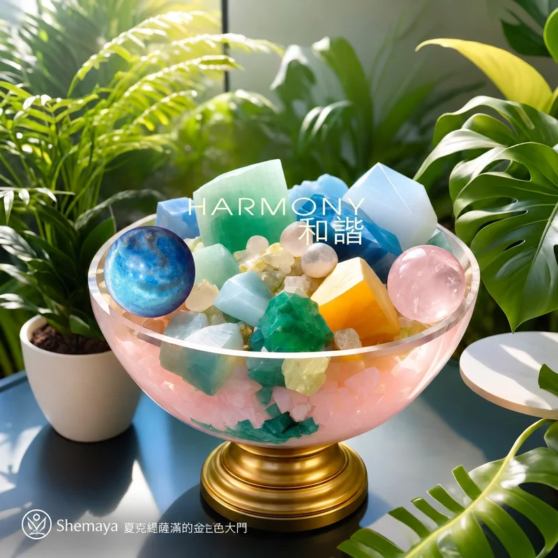
30ml $1300
含有藍蕾絲等四種水晶光的光頻與神聖祝福能量，能移除各種不同觀點與視野產生的見解分歧，帶來對不同觀點的彈性與包容力，擴展喉輪的自我設限，增進能溝通表達能力，使人放下堅持，去接納不同的聲音立場，提升個人意識層次，達到柔軟與和諧共好。
除針對人際關係，和諧噴霧也能淨化停留在空間中的紛擾能量，能為家庭、工作室、商業空間帶來淨化。和諧噴霧讓心充滿寜靜與和諧，消除衝突紛爭留下的負能量。她特別支持家庭的和諧。
使用方式： 閉上雙眼，將精華噴灑於手心深呼吸吸聞，在心中連結和諧，再噴灑於距離身體30公分外的距離，：眉心、太陽穴兩側、後心輪、上腹部，也可以自行選擇某些在身體周圍氣場的點，配合深長呼吸，去接收並感受和諧水晶光流，給自己一點時間靜心冥想，讓能量流動直到流動結束。
永恆
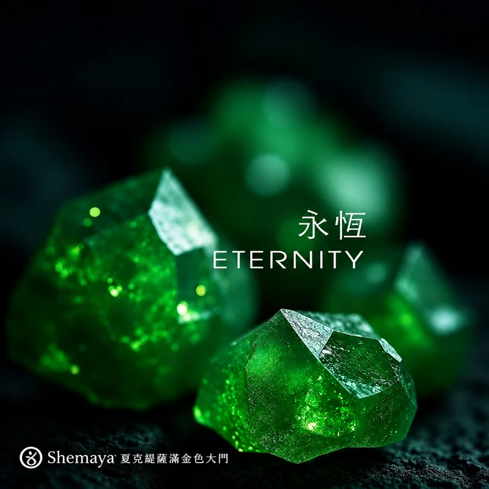
30ml $1300
閃耀著綠雲母及其他水晶光頻，帶著金綠色粉末的光，能快速溶解心輪與太陽輪之間的堵塞，特別支持脈輪裡愛的串聯與流動，能快速放鬆緊繃的身心與壓力，使情緒平穩，啟動身體的自癒能力。也有助心輪相關的相關問題。
永恆水晶噴霧能快速提升頂輪的振動頻率，她的光帶你進入時間的長河，給你永恆所特有的的寧靜與真實之愛，如此一來，你能以更高角度去看待生活中發生的事，而有更深透的理解。
這道永恆的光帶著純然的愛，帶你穿透表象，看到事物的本質與真相。她讓你的心被愛與深層的寧靜所充滿，你願意放下所緊抓的一切，很自然的調頻、深深呼吸，自然放鬆並有更多的彈性、柔軟，謙卑與內在智慧自然生起。
使用時機：生活忙碌、呼吸急促、肩膀緊繃，行事很節奏快、易緊張、焦慮的人，或是上腹常脹脹或心緊緊悶悶，或時常擔憂未來、擔憂所愛的人，或常容易生氣，缺乏耐心的人，對自己懷疑的
使用方式： 閉上雙眼，將精華噴灑於手心深呼吸吸聞，在心中連結永恆，再噴灑於距離身體30公分外的距離，：頭頂上方、眉心、太陽穴兩側、後心輪、上腹部、雙肩，也可自行選擇某些在身體周圍氣場的點，配合深長呼吸，去接收並感受和永恆的光流，給自己一點時間靜心冥想，讓能量流動直到流動結束。
保護
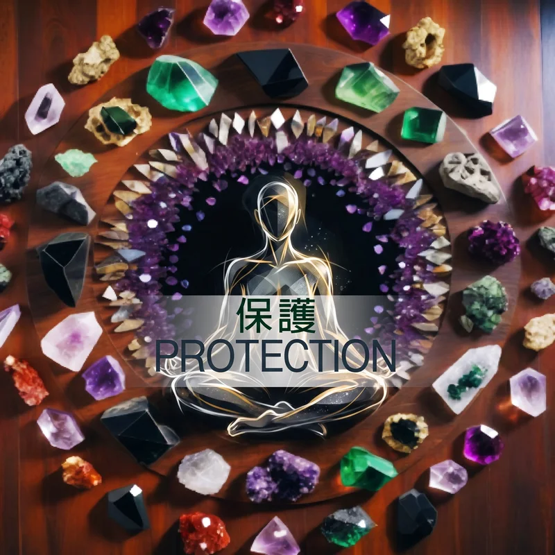
30ml $1300
具快速修補能量缺口的能力，同也帶來清醒、覺知與觀察力。含紫水晶、黑曜石等六種水晶光頻與神聖祝福能量，含神聖蘿勒、岩蘭草與其他植物香氣。
強化並穩定能量結構、快速集中能量、清理負能、快速補充海底輪，臍輪、太陽輪能量，快速串聯所有脈輪、從內去激發身體所需的保護力、反彈某些有害的能量、減少被環境負能量影響
對於民俗的七月或是去不祥之地，產生被沖煞等出現頭昏，不舒服等狀態，也能提供 快速修復能量缺口，及重新平衡的功用。使用者回饋這瓶像是急救電擊棒般快速回電效果。
使用方式： 閉上雙眼，將精華噴灑於手心深呼吸吸聞，在心中連結保護，再噴灑於距離身體30公分外的距離：胸口、前後心輪、上腹部、下腹部、海底輪，或自行選擇某些在身體周圍氣場的點，配合深長呼吸，去接收並感受保護的水晶光流，給自己一點時間靜心冥想，讓能量流動直到流動結束。
健康
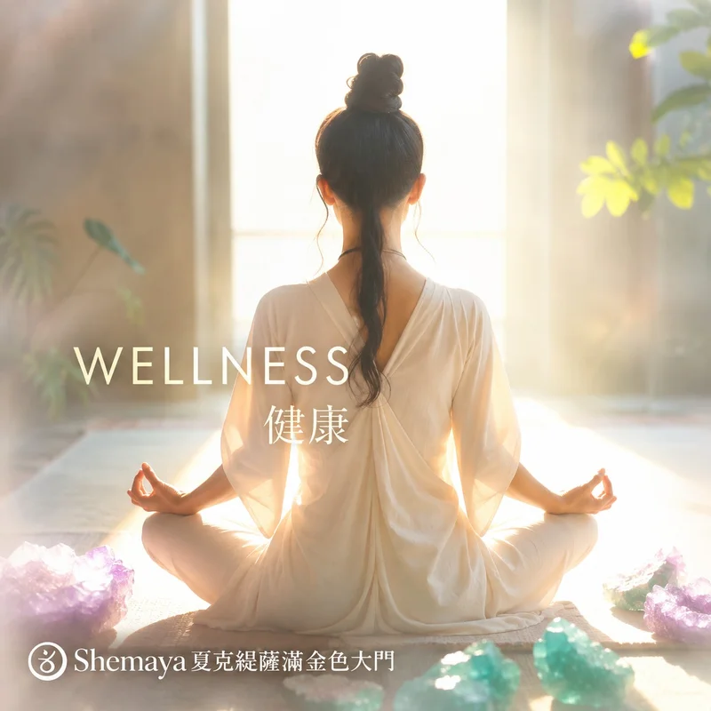
30ml $1300
含舒俱萊、紫水晶等...7種水晶光能，以及神聖祝福能量。此水晶光能皆有利身體層級，包含不同的類型，清除疲勞與負能量的水晶、加強代謝、提振身心、強化健康能量。其中也有益維護骨骼、牙齒健康的水晶、有助循環、呼吸、，整體能量可協助啟動身體自癒能力。全家大小皆適合使用。
使用時機：想要好好照顧身體的人，成長中的兒童、青少年、工時長壓力大的上班族、或是身兼數職的人、亞健康族、大病初癒者、銀髮族等皆合適。
使用方式： 閉上雙眼，噴灑於距離身體30公分外的距離，並深深呼吸：胸口、後心輪、上腹部、腹部、海底輪，或自行選擇某些在身體周圍氣場的點，配合深長呼吸，去接收並感受健康的水晶光流，給自己一點時間靜心冥想，讓能量流動直到流動結束。
心之光韻
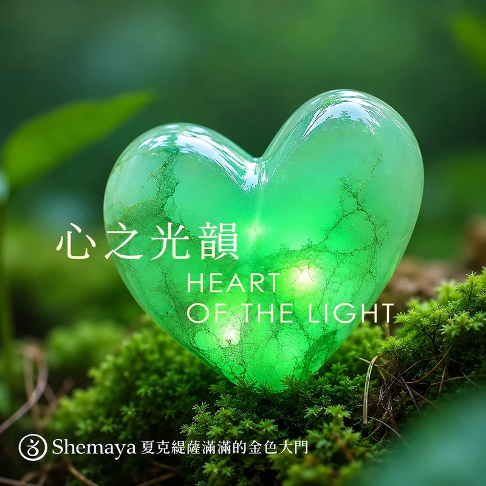
30ml $1300
含有鉻透輝、葡萄石等7種水晶光頻與神聖祝福能量。心之光韻的水晶光頻特別能修補心輪細小的裂縫，修復心並釋放累積在心中的不快樂情緒，例如失落、傷心、憂傷、壓抑的情緒、悲傷淚水等。
心之光韻也能軟化因為不快樂而變麻木的心，她釋放壓抑並帶回心的通透度與空間，填入愛的能量與增進愛的流動。心之光韻對任何人都有益，釋放過往的不快樂，讓心騰出新的空間裝滿愛。
使用方式： 閉上雙眼，將精華噴灑於手心深呼吸吸聞，連結心之光韻，再將噴霧於距離身體30公分外的距離：胸口心輪、後心輪、臍輪（小腹）、眉心、海底輪等外圍的距離，也可自行選擇某些在身體周圍氣場的點，配合深長呼吸，去接收並感受多重綠光水晶流，給自己一點時間靜心冥想，讓能量流動直到流動結束。
心的急救
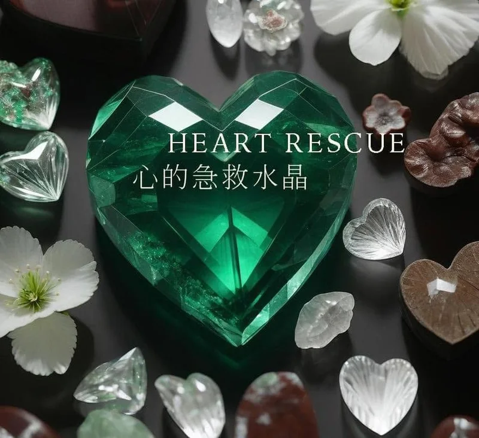
30ml $1300
蘊含祖母綠、綠櫻花及多種水晶的光頻能量，融合不同晶石的祝福，特別適合用來陪伴受傷的心重新獲得滋養，慢慢打開曾經封閉的心，釋放過往情緒留下的陰影。
她特別能擴大原有脈輪力量，並將原本缺陷的能量修復，並回歸完整。這瓶水晶光頻噴霧，也能觸碰內在深層的陰影。當過往的傷痛、壓抑的情緒，或外在環境帶來的沉重感，使心像被封閉能量而消耗時，她能為你進行情緒釋放，重新找回內在的力量與生命流動。
心力低落，情緒鬱悶，莫名感到提不起勁、身心極度疲憊、出現負面想法，或被過往情緒與陰影困擾、胸口有點悶、悲傷、難過、失落，或因某些經歷而封閉自己的心、感覺心輪能量不足，渴望重新打開愛、感覺脈輪薄弱、體力或精神透支，想要重滋養自己、接觸沉重、不舒服的外在環境，而產生的各種身心不舒服的狀況時。
使用方式： 閉上雙眼，將精華噴灑於手心深呼吸吸聞，連結心的急救，將噴霧於距離身體30公分外的距離：胸口心輪、後心輪、太陽輪（上腹）、臍輪（小腹）、後腰部、海底輪等外圍的距離，也可自行選擇某些在身體周圍氣場的點，配合深長呼吸，去接收並感受心的急救的水晶光流，給自己一點時間靜心冥想，讓能量流動直到流動結束。
吉祥和諧噴霧
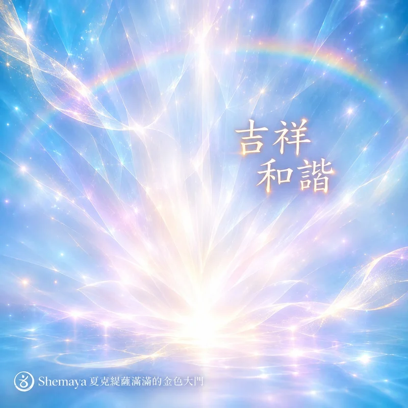
30ml $1300
50ml $2000
100ml $3800
為多效的水晶光能噴霧，含有羥磷鋁以及其他水晶光、液態水晶白光等，也特別注入賽巴巴的祝福與愛，這些高頻的光能帶來和諧穩定，並快速提高空間的振動頻率。
1，梳理氣流，帶來正向能量、和平與寧靜。
2，快速提升身心振動頻率
3,，消弭環境中紛亂的負向波動以及衝突、不和諧的能量
4，支持表達與溝通的能力
5，支持安神、舒眠並能帶來和諧
使用方式：閉上雙眼，將精華噴灑於手心深呼吸吸聞，在心中連結吉祥和諧，再噴灑於距離身體 30公分外的距離，並深深呼吸：眉心輪（額頭）、頂輪、胸口、後心輪、上腹部兩側、下腹部，或自行選擇某些在身體周圍氣場的點，配合深長呼吸，去接收並感受健康的心的急救水晶光流，給自己一點時間靜心冥想，讓能量流動直到流動結束。
紅罌粟花
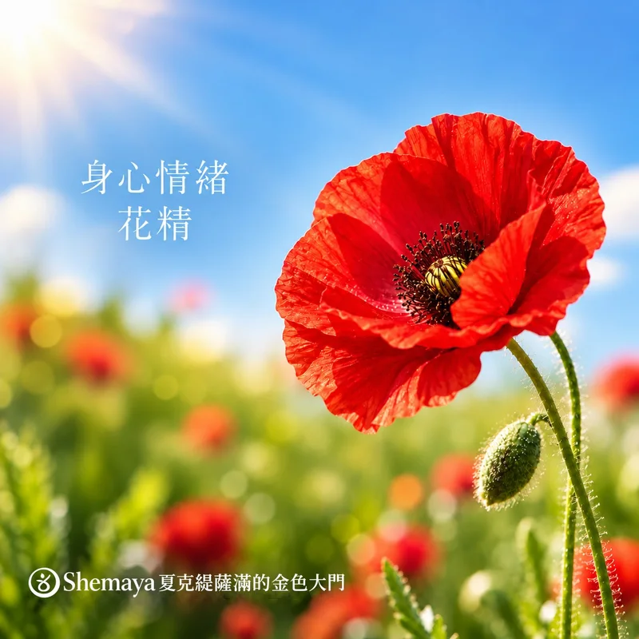
30ml $1300
罌粟花帶著神性之母的愛與基督意識的慈悲，能溫柔地軟化心中僵硬結構，溫柔地協助心去釋放痛苦，讓人能再度打開因受傷而關閉的心，重新去愛。
紅罌粟花的花光協助人們誠實面對自身的陰影！不再繼續逃避或抗拒，透過她的愛與接納去整合一切，她的花光能進入靈魂與心智去迎向光，喚醒沉睡中的靈魂，憶起神性之光，透過再度與光連結，而使人有足夠力量去穿越自身的業力。
紅罌粟花給予人來自萬物合一的愛，去打開人們心中的愛，釋放痛苦、整合內在陰影，她協助人們取回自己的生命主導權。
特別推薦：
因受傷而關閉的心、想釋放心的痛苦、想軟化內心堅固的戰士、想打開心重新去愛、想跳脫業力控制的人生、需要平衡身心的陰與陽、想整合內心陰影、想透過愛取回自我主導權、想要放鬆的心重新流動。
使用方式：閉上雙眼，將精華噴灑於手心深呼吸吸聞，在心中連結紅罌粟，再噴灑於距離身體30公分距離的前方：胸前心輪、後背、太陽輪（上腹）、臍輪（小腹）、海底輪，或你覺得想加強的身體部位之周圍。配合深長呼吸，感受被紅罌粟的溫柔花光，給自己一點時間靜心冥想，讓能量流動直到流動結束。
內在小孩
30ml $1300
和母親的關係會影響成年後的親密關係，倘使幼年期雙親太忙，或母親不在身邊或被送養，或隔代教養等原因，導致孩子童年未得到足夠的愛，這些來自童年時光的記憶感受，會在潛意識中持續影響成人後的情緒與行為。由於內在某部分並沒隨著年齡成長而停留在幼年期的，就叫內在小孩。內在小孩常能讓人回憶起美好的童年經歷，也會喚起幼時的恐懼和創傷等不被愛的記憶。
內在小孩水晶光噴霧，含月光石等四種水晶光頻與神聖祝福能量，具多種特色：給予鼓勵與肯定、提供安全感、安定、滿足被愛的渴望、提供母性愛修補內心缺憾或創傷。內在小孩水晶的愛也能協助當事人更多回到愛中，對過往能有所理解，放手不快樂的記憶。透過給予母性的愛，深深的療癒臍帶關係。
使用時機：受某些話語或行為影響心情時、與人互動引發舊時的某種情緒記憶時，或是感到退縮、受傷、痛苦或憂鬱時，內心感到匱乏，或孤單時、渴望被理解被接納時，想靠近和母親的距離，或想緩解親子關係，想要被愛時，或想解除心中不安全感，想重新信任、想被珍視時，想解決感衝突。
使用方式： 閉上雙眼，噴灑於距離身體30公分外的距離：胸口心輪、後心輪、小腹、後腰部、眉心、海底輪等外圍的距離，也可自行選擇某些在身體周圍氣場的點，配合深長呼吸，去接收並感受溫暖包容的愛之流，給自己一點時間靜心冥想，讓能量流動直到流動結束。
心之光韻
30ml $1300
含有鉻透輝、葡萄石等7種水晶光頻與神聖祝福能量。心之光韻的水晶光頻特別能修補心輪細小的裂縫，修復心並釋放累積在心中的不快樂情緒，例如失落、傷心、憂傷、壓抑的情緒、悲傷淚水等。
心之光韻也能軟化因為不快樂而變麻木的心，她釋放壓抑並帶回心的通透度與空間，填入愛的能量與增進愛的流動。心之光韻對任何人都有益，釋放過往的不快樂，讓心騰出新的空間裝滿愛。
使用方式： 閉上雙眼，將精華噴灑於手心深呼吸吸聞，連結心之光韻，再將噴霧於距離身體30公分外的距離：胸口心輪、後心輪、臍輪（小腹）、眉心、海底輪等外圍的距離，也可自行選擇某些在身體周圍氣場的點，配合深長呼吸，去接收並感受多重綠光水晶流，給自己一點時間靜心冥想，讓能量流動直到流動結束。
心的急救
30ml $1300
蘊含祖母綠、綠櫻花及多種水晶的光頻能量，融合不同晶石的祝福，特別適合用來陪伴受傷的心重新獲得滋養，慢慢打開曾經封閉的心，釋放過往情緒留下的陰影。
她特別能擴大原有脈輪力量，並將原本缺陷的能量修復，並回歸完整。這瓶水晶光頻噴霧，也能觸碰內在深層的陰影。當過往的傷痛、壓抑的情緒，或外在環境帶來的沉重感，使心像被封閉能量而消耗時，她能為你進行情緒釋放，重新找回內在的力量與生命流動。
心力低落，情緒鬱悶，莫名感到提不起勁、身心極度疲憊、出現負面想法，或被過往情緒與陰影困擾、胸口有點悶、悲傷、難過、失落，或因某些經歷而封閉自己的心、感覺心輪能量不足，渴望重新打開愛、感覺脈輪薄弱、體力或精神透支，想要重滋養自己、接觸沉重、不舒服的外在環境，而產生的各種身心不舒服的狀況時。
使用方式： 閉上雙眼，將精華噴灑於手心深呼吸吸聞，連結心的急救，將噴霧於距離身體30公分外的距離：胸口心輪、後心輪、太陽輪（上腹）、臍輪（小腹）、後腰部、海底輪等外圍的距離，也可自行選擇某些在身體周圍氣場的點，配合深長呼吸，去接收並感受心的急救的水晶光流，給自己一點時間靜心冥想，讓能量流動直到流動結束。
幸福
30ml $1300
有粉紅碧璽及其他水晶光頻與神聖祝福能量。帶著輕透、粉紅光的幸福之愛流入全身脈輪激發愛的潛能，讓人感受被幸福美好所環抱。
幸福水晶光會先為你移除不幸福之感受，再以帶著滿足與被愛來為脈輪充電，粉紅光頻的電流化解釋放身體堵塞的能量點，能活化身體動能，有益全身上下全脈輪，支持結連高我、 連結動物、與連結大自然王國、支持陪伴兒童
感受被愛的幸福感，使用者回饋說感覺自己身心有回春與輕盈感，也有人覺得自己變美、變年輕之感。當你感到孤獨時、想要被愛時、想要有安全感時、想變年輕、想要變美時、想有充滿活力的一天時、失戀時、想重新振作、想要連結更高層級的世界、為動物溝通作準備、想和大自然連結、想更耐心更有愛時。
使用方式：閉上雙眼，將精華噴灑於手心深呼吸吸聞，在心中連結幸福水晶光，再將噴霧噴於距離身體30公分外的距離：胸口、後心輪、下腹部、海底輪，也可以自行選擇某些在身體周圍氣場的點，配合深長呼吸，去接收並感受幸福的光流，給自己一點時間靜心冥想，讓能量流動直到流動結束。
金光醇蜜噴霧

30ml $1300
源自賽巴巴的古老靈性光釀智慧，金光醇蜜像溫暖、流動又滋養的飽滿金光瓊漿，獻給在生活考驗中全力以赴、忘了如何輕鬆歡笑的人兒。
日常的責任清單、家庭與工作的重擔，常讓我們像緊繃的弦一樣不敢鬆懈。長期的咬牙支撐，讓人漸漸習慣把所有壓力扛在肩上，忘了生活該有的甜美與輕盈。金光醇蜜以極致溫暖、包容的金色光芒，溫柔融化生活的艱辛，並將這份苦澀感轉為喜悅與甜美，如同久釀的好酒般醇美。
獻給終年辛勤工作，遺忘如何讓自己輕盈喜悅的人們，金光醇蜜能快速卸除由責任包袱堆疊的壓力苦澀，它能溶解硬化的頭腦與肩膀，那份滋養的金光喚醒你開始愛自己，記得為自己服務。金光醇蜜為身心帶來撫慰與柔軟，也帶來甜美和滋養。
特別推薦終年為家庭、事業兩頭奔波，身兼多重角色的朋友與全職媽媽，以及負責組織負營運，責任一肩扛的決策者、身心處於高壓、應付挑戰日常的人、繃緊神經，生活只剩下清單，卻渴望改變一成不變生活的人。
使用方式：閉上雙眼，將精華噴灑於手心深呼吸吸聞，在心中連結金光醇蜜，再將噴霧噴於距離身體30公分外的距離：胸口、後心輪、下腹部、海底輪，也可以自行選擇某些在身體周圍氣場的點，配合深長呼吸，去接收金光醇蜜的柔軟金光，給自己一點時間靜心冥想，讓能量流動直到流動結束。
水月
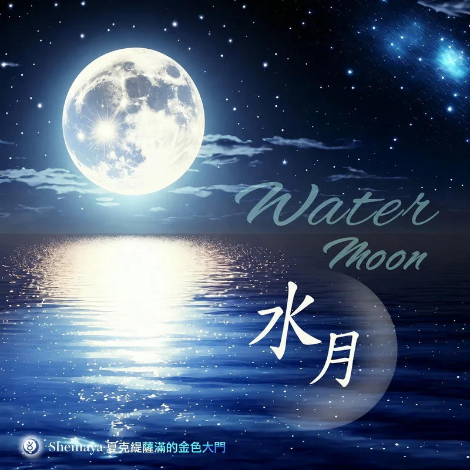
30ml $1300
水晶結構純淨白光超強淨化力，像是瀑布奔流般的能量，為長期處於高壓、緊繃的身心進行徹底的氣場大掃除。
現代生活中快速、機械化的步調讓身心像上了發條的齒輪般難以停歇。這股純淨的水元素與光植物的洗滌力，能快速解除身心被限制住之感，融化身心僵固的滯礙感，將乾枯或窒悶轉化為輕盈流動。
釋放沈重緊繃，帶回流動與輕盈，快速化解僵固停滯，讓身心卸下機械化的過度運轉，注入陰性的女性滋養力，使乾涸的身心重獲柔軟與沉靜。平衡過多的陽性脈衝，找回沉靜、流動與溫柔。在純淨水月之光的陪伴下放下焦慮，許你一夜安歇，享受久違的鬆弛與沉穩深眠。
使用方式：閉上雙眼，將精華噴灑於手心深呼吸吸聞，在心中連結水月，再噴灑於距離身體30公分距離的前方：頭頂頂輪、額頭前後、胸前心輪或小腹、海底輪，以及你覺得有需要的身體部位的周圍氣場。配合深長呼吸，感受被水月的溫柔沖刷，給自己一點時間靜心冥想，讓能量流動直到流動結束。
讚美
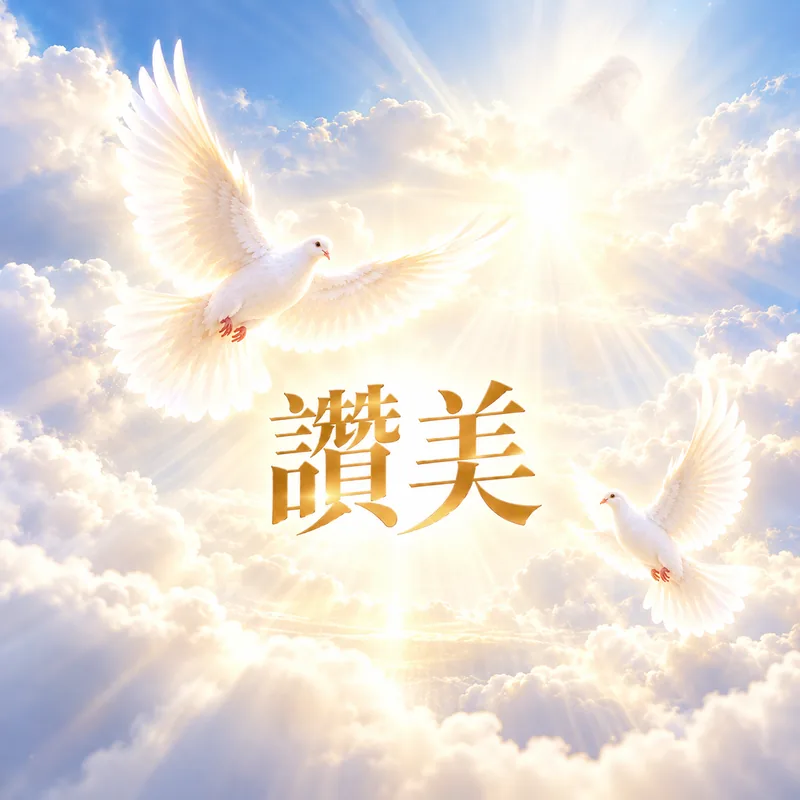
30ml $1300
承載源自無條件慈愛的高頻恩典，「讚美」是送給靈魂最深情的禮物。在成長、生活或職場中，多少都承受過來自外界的苛責、評判與否定。那些未曾被好好安撫的話語，往往化為深藏心中的自我懷疑、自我貶抑、自我否定，，讓我們常覺得「自己還不夠好」。
讚美能量精華融合神聖植物光萃與高頻愛之意識，能撫平過往評判留下的印記。
提升意識震動頻率，將神性的無條件接納與尊嚴帶入，讓人再次感受被全然愛與讚賞。
以祝福與愛的讚美移除低價值感，能由衷地欣賞自己，啟動自我之愛接納自己原本的模樣。
使用方式：閉上雙眼，將精華噴灑於手心深呼吸吸聞，在心中連結讚美，再噴灑於距離身體30公分距離的前方：頂輪、額頭前後、心輪、眉心輪、耳朵外圍、小腹，以及你覺得有需要的身體部位的周圍氣場。配合深長呼吸，感受被讚美所包圍，給自己一點時間靜心冥想，讓能量流動直到流動結束。
基督白火
30ml $1300
承載著無條件的愛之火，能深度清理身心與細脈輪裡，那些阻隔愛去流動的負向生命印記，她帶領你走出過往經驗所感受到「不被愛」與「缺乏愛」的陰影。她帶來愛的脈衝，支持體驗被無條件的愛所環繞，並向世界敞開自己。
這股基督白火具有雙重火焰的療癒力：
1,溫柔穿透的女性之火：柔軟而具穿透性，能直接內心深處隱藏的「不被愛」的抗拒與受苦的印記陰影。
2,熾熱的轉化之火：以無條件的愛的純白火焰，強大迅速消融所有「非愛」帶來的沉重感與陰影。
＊迅速移除內心深處，不被愛的經歷與匱乏感
＊釋放為愛而討好他人的慣性，停止漠視自身權益
＊釋放身心重擔，卸下「不屬於自己的責任」，轉化身心壓力
＊洗去沉重感與受苦意識
＊拿回生命主權
＊支持自我之愛，不再把自己放最後
＊轉化恐懼：不再將受苦合理化，消除內心最深的擔憂與恐懼，使人重新聚焦於愛
使用方式： 閉上雙眼，將精華噴灑於手心深呼吸吸聞，在心中連結基督白火，再噴於離身體30公分距離前方的胸口、眉心、喉嚨、小腹，及任何你覺得需要部位的氣場周圍，深呼吸，讓自己被基督愛的白火包圍、淨化。給自己一點時間靜心冥想，讓能量流動直到流動結束。
和諧
30ml $1300
含有藍蕾絲等四種水晶光的光頻與神聖祝福能量，能移除各種不同觀點與視野產生的見解分歧，帶來對不同觀點的彈性與包容力，擴展喉輪的自我設限，增進能溝通表達能力，使人放下堅持，去接納不同的聲音立場，提升個人意識層次，達到柔軟與和諧共好。
除針對人際關係，和諧噴霧也能淨化停留在空間中的紛擾能量，能為家庭、工作室、商業空間帶來淨化。和諧噴霧讓心充滿寜靜與和諧，消除衝突紛爭留下的負能量。她特別支持家庭的和諧。
使用方式： 閉上雙眼，將精華噴灑於手心深呼吸吸聞，在心中連結和諧，再噴灑於距離身體30公分外的距離，：眉心、太陽穴兩側、後心輪、上腹部，也可以自行選擇某些在身體周圍氣場的點，配合深長呼吸，去接收並感受和諧水晶光流，給自己一點時間靜心冥想，讓能量流動直到流動結束。
永恆
30ml $1300
閃耀著綠雲母及其他水晶光頻，帶著金綠色粉末的光，能快速溶解心輪與太陽輪之間的堵塞，特別支持脈輪裡愛的串聯與流動，能快速放鬆緊繃的身心與壓力，使情緒平穩，啟動身體的自癒能力。也有助心輪相關的相關問題。
永恆水晶噴霧能快速提升頂輪的振動頻率，她的光帶你進入時間的長河，給你永恆所特有的的寧靜與真實之愛，如此一來，你能以更高角度去看待生活中發生的事，而有更深透的理解。
這道永恆的光帶著純然的愛，帶你穿透表象，看到事物的本質與真相。她讓你的心被愛與深層的寧靜所充滿，你願意放下所緊抓的一切，很自然的調頻、深深呼吸，自然放鬆並有更多的彈性、柔軟，謙卑與內在智慧自然生起。
使用時機：生活忙碌、呼吸急促、肩膀緊繃，行事很節奏快、易緊張、焦慮的人，或是上腹常脹脹或心緊緊悶悶，或時常擔憂未來、擔憂所愛的人，或常容易生氣，缺乏耐心的人，對自己懷疑的
使用方式： 閉上雙眼，將精華噴灑於手心深呼吸吸聞，在心中連結永恆，再噴灑於距離身體30公分外的距離，：頭頂上方、眉心、太陽穴兩側、後心輪、上腹部、雙肩，也可自行選擇某些在身體周圍氣場的點，配合深長呼吸，去接收並感受和永恆的光流，給自己一點時間靜心冥想，讓能量流動直到流動結束。
自由

30ml $1300
汲取蔚藍海洋無垠的創造力，與海豚靈動歡快的高頻共鳴，「自由」專為被日常責任、框架與僵化思維緊緊束縛的身心而生。
當生活剩下長長的待辦清單，當思緒困在僵局混沌，身心失去彈性而變得沉重而固著，海豚的純淨智慧與海洋母親的創造頻率，化為跳躍奔放的浪花，將純真、喜悅與不受限的生命力注入你身心，自由精華讓所有困住的，都有了出口。讓自由帶你到更寬廣的遠方，享受海闊天空的擴展。
使用方式： 閉上雙眼，將自由精華噴灑於手心深呼吸吸聞，在心中連結自由，再噴灑於距離身體30公分外的距離，：心輪、喉輪、眉心輪，後心輪，也可自行選擇某些在身體周圍氣場的點，配合深長呼吸，去接收並感受自由的光流，給自己一點時間靜心冥想，讓能量流動直到流動結束。
彩虹狼
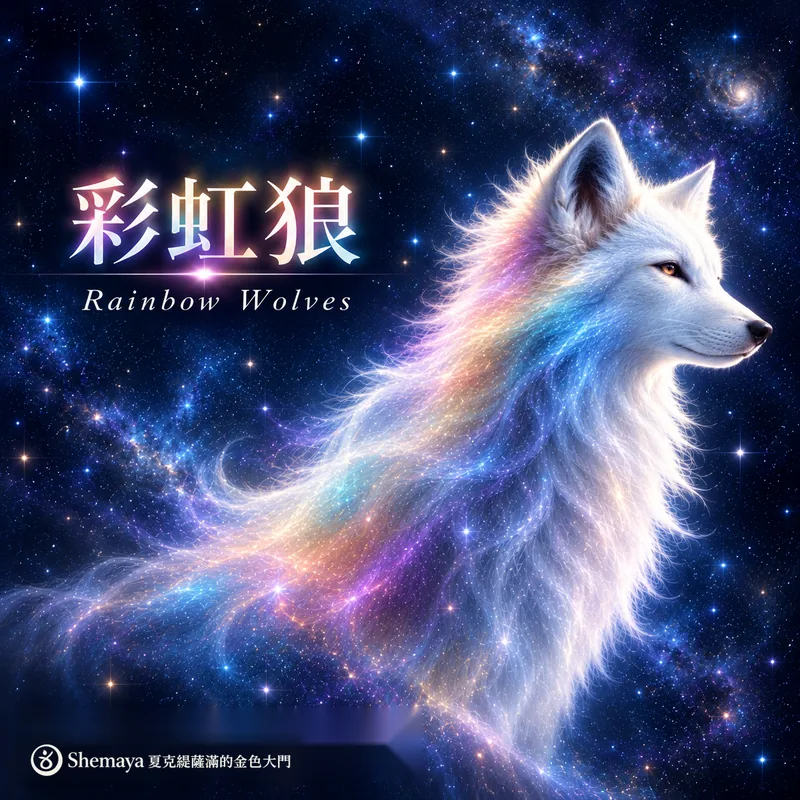
30ml $1300
長大以後，我們習慣成熟與平靜，卻遺忘了小時候那種毫無保留、雀躍奔跑的喜悅。
喜悅，從未真正離開過你，它只是在生活長期的忙碌與情緒收斂中，被悄悄遺忘!
彩虹狼精華能穿透層層壓抑與麻木，轉化被隱藏的悲傷、不開心等情緒，它獨特的彩虹光譜能填滿你所有脈輪，帶來一股喜悅的振動頻率，喚醒靈魂深處本有的純粹喜悅。
使用方式：閉上雙眼，將精華噴灑於手心深呼吸吸聞，在心中連結彩虹狼，再噴彩虹狼於距離身體30公分外的距離，：心輪、喉輪、眉心輪、後心輪、上腹部，也可自行選擇某些在身體周圍氣場的點，配合深長呼吸，想像全身被彩虹狼的彩虹光環繞著，給自己一點時間靜心冥想，讓能量流動直到流動結束。
大地之愛

30ml $1300
承載著大地母親無邊無際的愛——不是巨大到令人屏息的壓迫，她是無比沉穩、溫厚且充滿溫暖的愛與堅定支撐。當生活讓你感到心力交瘁、腳步虛浮，大地之愛讓你安全徜徉其中，去敞開你的疲憊與脆弱，將積累的所有沉重交託出去。大地之愛支持你放手那些心事苦悶，放手讓所有無法承載的，回歸大地。
大地之愛精華創造充滿大地母親保護與愛的空間，他的愛能懷抱人放鬆與有安全感，讓身心進入沉穩的深度休息。獻給操勞忙碌、長期撐起家庭的父母；以及容易受到環境驚擾、需要較多安全感陪伴的孩子；以及每個身心疲累、渴望被穩穩接住的人兒。
使用方式：閉上雙眼，將大地之愛精華噴灑於手心深呼吸吸聞，在心中連結大地母親，再噴彩虹狼於距離身體30公分外的距離：心輪、雙腳腳底、下腹部、海底輪（尾椎處），也可自行選擇某些在身體周圍氣場的點，配合深長呼吸，想像想像雙腳向下扎根於溫暖土壤，全然感受大地母親的愛，被結大地母親的愛包覆著，給自己一點時間靜心冥想，讓能量流動直到流動結束。
彩虹創造之光
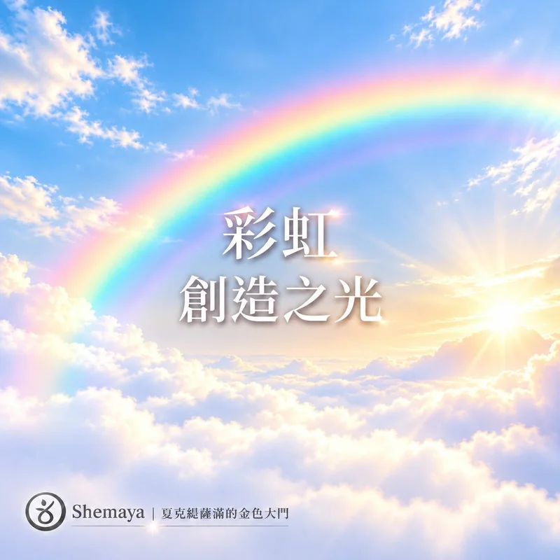
30ml $1300
彩虹創造之光是來自彩虹創造源頭的光束，也含有來自自然界萬物的祝福，她將不同品質的愛與力量帶入全身脈輪，為身心注入豐沛的支持、充電。每道彩虹創造之光蘊含不同的能量與品質：強而有力的支持與充電，溫暖的滋養、活力與喜悅，平靜的流動與和諧、無限的愛與綻放，光的擴展、空間的轉換，意識的淨空與洞見，也帶你接收來自大自然不同形式的愛，並開啟與宇宙連結的智慧。
彩虹創造之光帶領你進入與萬物合一的愛之中。讓你不只是全然地臨在於當下，也能深刻與自然、萬物及宇宙連結作。在無二分別的合一之中，你能重新得到完整與愛的流動，因此也能為全身脈輪帶入更多支持與滋養，喚醒內在愛的力量，並強化愛的能力。
彩虹創造之光是脈輪急救瓶，當你感覺心力低落、精神疲憊，對事情都提不起勁；當你有想完成的目標，卻總缺少一股推動的力量；或是感覺特定脈輪能量耗弱，身心想被支持滋養時，都可運用彩虹創造之光。特別是身心需要恢復的階段，或經歷長時間的能量消耗後，彩虹創造之光是快速補充能量的首選—讓所有脈輪獲得充電與滋養，喚醒生命力，並回到與宇宙萬物合一的完整狀態。
用方式：閉上雙眼，將精華噴灑於手心深呼吸吸聞，在心中連結彩虹創造之光
，再噴灑於距離身體 30 公分距離的前方：以緩慢速度一個一個作，先在心輪前方作二分鐘的定點流入，然後再陸續分開作喉輪、眉心輪（額頭）、頂輪（頭頂）以及太陽輪（上腹部）、臍輪（下腹部）、海底輪（會陰）。也可作在任何你覺得需要的身體部位的氣場。配合深長呼吸，感受身心得到修復與滋養，給自己一點時間靜心冥想，讓能量流動直到流動結束。
金光花蜜
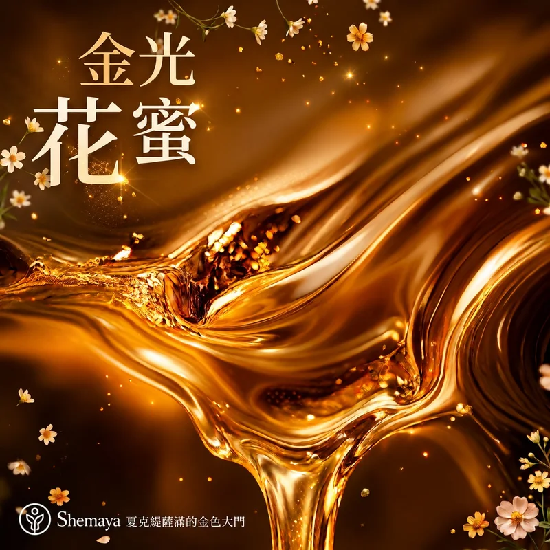
30ml $1300
帶著喜悅與甜美能量的金光花蜜，是來自熊部落長老的一份珍貴禮物。Shemaya 將這份祝福化為精華噴霧，分享給更多人，尤其是那些總是把愛毫無保留地給予家人，卻經常忘了好好疼愛自己的朋友們。
責任感中的人，無論多麽忙碌、疲憊，總是默默承擔。特別是走入家庭、為人父母後，你的生活重心逐漸圍繞著家，像穩固的樑柱你撐起家的運轉。這些朋友即使遇到再困難的事，常習慣一肩扛起。年復一年的付出與奉獻，可能逐漸忘記自己原本的模樣。無論你是被生活磨成無所不能的超人或是女超人：你的腦袋裡總是想著他們的的需求、尚未完成的待辦事項與計劃。即便終於有休息的片段，卻不知如何才能真正放鬆。往往身體停下來了，心思卻依然忙碌。對於這樣長期處於付出與承擔狀態的人，很建議日常生活中，搭配使用水月、月亮精華，讓身心先卸下疲憊、僵硬、緊繃，讓陰性能量再次流動。接著，再以金光花蜜去滋養身心。
金光花蜜，能成為你好好對待自己的儀式：使用金光花蜜，讓喜悅流入身心，讓生命的甜美滋養靈魂，再次沉浸在被愛的幸福與甜蜜感。你的愛可以給予他人，更重要的也要對自己好、疼愛自己，你可以主動擁抱生命，以愛珍惜自己並感受到生命的甜美與喜悅。
用方式：閉上雙眼，將精華噴灑於手心深呼吸吸聞，在心中連結金光花蜜，再噴灑於距離身體 30 公分距離的前方：在心輪、後背、肩膀外圍、手上臂外圍、臍輪（小腹）外圍、海底輪，或任何你覺得有需要的身體部位的氣場。配合深長呼吸，感受身心得到修復與滋養，給自己一點時間靜心冥想，讓能量流動直到流動結束。
找不到這個系列，請回商店重新選擇。
回靈性商店